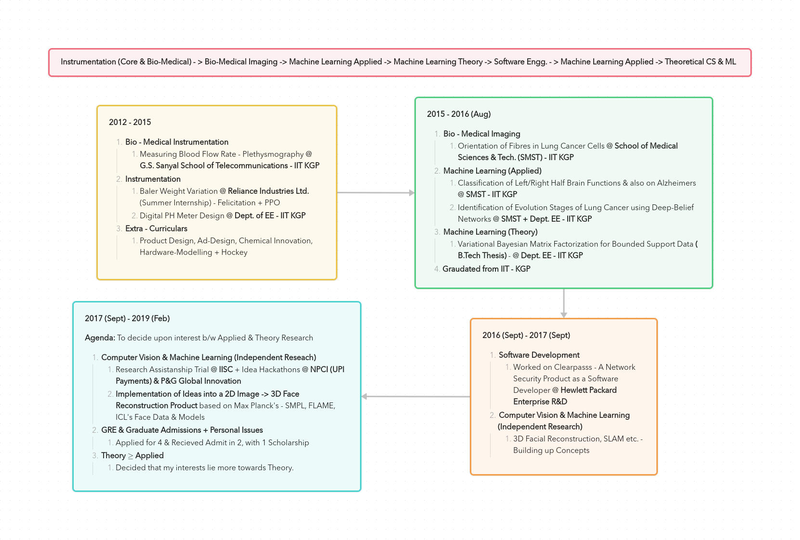

Tryst with ISI-Delhi
Table of Contents
About Me
1. Background Information
I started my research pursuit with Bio-Medical Devices & Imaging, Instrumentation and have travelled a long road experimenting in different areas - Machine Learning (Applied & Theory), 3D Face, Body Reconstruction, SLAM (typically called as NERFs recently) etc. where some happened to be co-incidental (includes job at HPE) with the trends and others well thought ones (like exploring Theory).
It was only in Jun'2019, I have concretely realized that my interests primarily lie in the intersection of Maths, Theoretical CS & Economics subjects, and resolved to pursue research in these subjects for the coming next 10-15 years. I was supposed to join in one of Masters CS programs starting from June'2019 but for some specific reasons, and also having realized by then already that I like Theory a lot more than the Applied aspects of research, I have dropped my masters plan abroad (avoiding to spend any huge sums) and chose the path of Civil Services with a plan to do a PhD down the line after 5-7 years being in the service (which is allowed complying with the service rules).
1.1 Summary: 2012 - 2019
[Click To Expand]
please open the image in a new tab for better clarity
For an elaborate description of my works during 2012-2019, read - Past, Present & Future - I
1.2 Summary: 2019 - Present
[Click to Expand]
 please open the image in a new tab for better clarity
please open the image in a new tab for better clarity
For an elaborate description of my works from 2019-Present, read - Past, Present & Future - II
Statement of Purpose
1. Introduction
To my fortune, I have found a great possibility in Sept'2022, which was the same month in which I gave my UPSC-CSE (Mains) Exam in 2022. The possibility has profoundly excited me to an extent that I was even ready to deliberately flunk my exam (only to appear again in next year - 2023). Till then, I have half-heartedly accepted & planned to delay my research pursuit for 5-7 years to comply with the rules of govt. (min. time one should spend in the service to obtain a study leave), but this discovery of a possibility has rekindled my spirit to pursue research without having to delay it any further. Prior to this discovery, my original plan was to appear in UPSC-CSE (for IAS/IFS), finish my M.A. Economics at IGNOU so that I can appear for Indian Economic Services as a backup option.
Naturally, it might occur to you when I'm so interested in research with many opportunities existing today, be it at Google/Microsoft/Amazon Research and many other MNCs to work on Electronic Commerce/Algos/Networks etc.
Why don't I pursue research single-mindedly and become a Research Scientist/Professor ?
In Jun'2019, I have made a steadfast decision to work for the state (govt.) as an organisation in an administrative position be it either in Administrative/Foreign Services and pursue research as a habit (not as a hobby; but with dedication). Also, the fact that I find it very hard & contrasting to my personality, to dedicate myself to one particular area/subject for an extended period of time (>15+ yrs) has completely ruled out the option for me to even think of becoming a full-time professor. That's why, to work for the state in an administrative capacity & also to retain felixibility in my breadth of interests - Maths, Theoretical CS & Economics etc., I have chosen this particular path - Civil Services + Research (as a habit).
2. Theoretical Economics $\succcurlyeq$ Theoretical CS
I have observed that ISI-Delhi provides an unique opportunity even though it doesn't recommended yet, it is open to a possibility of people to pursue their PhD remotely (not as a full-time). In my enquiry, I have come to know that there are people who are pursuing/have pursued research part-time (Ex: Leena Kumar etc.). Now, this possibility has come as an absolute blessing to me. I do not have to wait/delay my plan of pursuing research any further for 5-7 years.
After spending some time working on projects till Jun'2019 to resolve the dilemma of my future pursuit between Theory & Applied aspects of Machine Learning, I have realised that my inclincation was more towards Theory. Since then, I've been exploring (briefly) theory in different areas apart from Machine Learning within the computer science (Algorithmic Game Theory, Approximation Algos, Graph Theory & Combinatorics etc.) keeping myself updated with the directions of happening research works.
[Click to Expand] Some professors I follow in Computer Science
Prahlad Harsha & Othrs. at TIFR, Siddharth Barman (Fair Division) at IISC & groups working at Google & Microsoft Research in India, U.Penn (Sampath Kannan), UW (Anna Karlin, Sebastian Beubeck, Yin-tat-Lee etc.), UCSD (UIUC (Jugal Garg, Ruta Mehta etc.), Princeton (Matt Weinberg etc.), Harvard (Madhusudhan etc.), CMU (Pradeep Ravikumar, Venkatesh Guruswami etc.) and many other groups at MIT (Constantis Daskalias etc.), Columbia (Tim Roughgarden etc.), UW-Madison (Nowak, Suchi Chawla moved to UT-Austin etc.), Stanford (Andrea Montanari, etc.) & people at many others places - UWaterloo, Toronto, Oxford, ETHZ, EPFL etc.
Recently, after re-aligning my interests with Economics as primary focus from Theoretical CS in Sept'22, I have found ISI-Delhi with You & Prof. Arunava Sen as crown jewels to my this new world. Adding to this, "the possibility of pursuing research remotely" & "positive comments from your students on your mentorship" has only made the feeling more concrete.
Why ISI-Delhi ? Why Prof. Debasis Mishra ?
Apart from the quantitative emphasis and convergence between my areas of interests with your works & experience, doing a PhD at ISI would provide me an access to become part of an excellent research community and also equip me with tools and networks that would allow me transform succesfully into an Theoretical Economist. to do a PhD while being in the service with minimal interference, for it being an Indian University. This way, in every way starting from you to the institue, quality of research, its norms and independence, as a whole, I cannot of think of any institute other than ISI-Delhi which can fit perfectly well with my aspirations.
In this regard, from Oct'22 I have started to pickup the basics of the subjects with the help of M.A. Economics course at IGNOU. I felt it was the best option available for me to pursue, simultaneously I could also earn a degree. If in case, not even in my wildest dreams I would allow, but if anything goes wrong with the UPSC-CSE, I can appear for Indian Economic Services ( for which M.A. Economics is compulsory) as a backup option.
3. Need some more Time!
Though the ISI-JRF (QE) exam primarily focuses on foundational depth with some deducable patterns existing in the questions asked - Utility Maximization, Theory of Choice, Econometrics Basics + Dev Econ., Time Series Basics, Growth Models, Nash & Sub-Perfect Nash Equilibrium (one year they were missing). I came across some instances where the terminologies appearing in the exam which are not quite common at the first instance for someone like me who just started in Oct'22 (Ex: $2^{nd}$ Question's Perfect Labour Mobility in QEB, 2018 etc.) .
If not for both ISI-JRF & IGNOU exams, I would have strictly confined myself to Microeconomic Theory and covered as much material as possible restricting exclusively to the following topics at first - Theory of Choice, Equilibrium & Welfare, Game Theory, Mechanism Design, Auction Theory etc., starting with your notes for the foundations build up.
But lately, I'm having a feeling that I will need some extra time inorder to cover these more broadly & concretely, especially with UPSC-CSE preparation heavily constraing my time. And also to fill my knowledge gaps in Econometrics (despite familiarity with Max. Likelihood, Regression etc. in Machine Learning) & Macroeconomic Theory (being broad). I may have completed 1st year M.A. Economics - IGNOU exams already in Dec'22, but I did not find their materials sufficient enough to cover the breadth & depth required. I found them a lot more verbose.
[Click to Expand] Clash of UPSC - CSE, ISI-JRF (QE), Indian Economic Services, 2nd year M.A. Economics - IGNOU Exams
UPSC-CSE being primarily a memory-based exam and me aiming for securing a top-rank in it, a major portion of my day-time gets consumed by it, in addition its Mathematics Syllabus is more wider than deeper (almost equivalent to M.Sc Level). If it is not for Mathematics & its vast syllabus (advantage is fetches more marks), UPSC-CSE would have been much easier to be done away with. All of the exams happening around the same months is making it quite difficult for me to optimally allocate my attention & memory to obtain the best results in all. To my luck/bad-luck 2nd year M.A. Economics exams of IGNOU and Indian Economic Services are clashing with the exam dates, preparation for these two has been demanding a lot of my head memory more than others, both of them are verbose.
So, for their sheer size in material and also clashing of dates, I have decided not to appear for Indian Economic Services Exam this year & postponed my plan to give my 2nd year M.A. Economics exams of IGNOU to Dec'2023.
With this, only two exams remain - UPSC-CSE (Prelims in May'23 & Mains in Sept'23) & ISI-JRF (in May'23) to tackle currently, yet both being in May'2023 (UPSC - Prelims) with contrasting demands of the subjects, especially memory management which is heaviy required for UPSC-CSE. In addition to this, QEA of ISI-JRF (QE) requires Probability & Statistics, Optimization etc. (though not very deeply), UPSC-CSE (Maths) held in Sept'23 demands primary focus on ODEs, PDEs, Mathematical Physics - Mechanics, Fluid Dynamics, Group Theory, Real Analysis etc., with only Linear Algebra & Calculus being common to both.
 please open the image in a new tab for better clarity
please open the image in a new tab for better clarity
All in All, despite cutting down the number of exams to appear in to two, both UPSC-CSE & ISI-JRF are being quite demanding in subjects breadth within less time, it has become quite difficult for me to memory manage & work towards producing best results in both, especially when preparing without any established guidance. To address this problem, I have found a solution but I would like to check them with you and verify before I proceed.
4. Queries
-
Instead of appearing for the exam in May'23 and joining the campus in Aug'23, Can I instead seek admission starting from Sept'23 for the PhD Program? I'm willing to take any kind of examination which the admission board requires me - written/interview etc.
[Click to Expand] Explanation:
Since, it is being difficult to memory manage for both exams UPSC-CSE & ISI-JRF being held in May'23. In this regard, taking note of the exception that exists on ISI's - Economics Planning Unit webpage attached below. Can I seek an admission instead by taking the examination test the admission board requires me in order to start from Sept'23 ?
By doing this, I can provide maximum attention towards securing a top-rank in UPSC-CSE with its written exams finishing in Sept'23. Also, this would provide me more than enough time (since I have only started in Oct'22) to concretely establish my foundations strongly in Micro Theory - Choice, Equilibrium & Welfare, Game Theory, Mechanism Design, Auctions & Network Theory. Additionally, will also provide enough time to fill my knowledge gaps in Econometrics & Macro Theory (emphasising on parts involving micro elements) lot more beyond the demands of the ISI-JRF Exam.
Above all, will provide me enough time to do an in-depth analysis on some recent papers and understand the trends and directions of research more concretely. By getting done away with UPSC-CSE (towards securing a top-rank), I can whole-heartedly be able to dedicate myself to research without having to worry about career planning and family much. -
Is ISI-JRF (QE) exam the only way to join the PhD program with a fellowship ? Will I be offered JRF Fellowship for starting from Sept'23 ? Otherwise, Can I begin my PhD program with your SERB CRG grant for the period Sept'23 - Jul'24 as mentioned on Economic Planning Unit's (EPU) webpage and clear the exam in May'2024 for JRF Fellowship ?
[Click to Expand] Explanation:
Going by the instructions mentioned on the EPU's PhD program webpage, I will probably be ineligible for JRF Fellowship untill I clear the exam in the following year (2024) since I'm planning to take my admission in PhD program starting from Sept'23. In this regard, I would like to know whether after clearing the test with admission board will you be able to offer me fellowship from SERB CRG grant in equivalent terms as mentioned on EPU's Announcements webpage, attached below.
Also, with no doubts in my mind. I will clear UPSC-CSE this year and will not require any JRF Fellowship starting after Aug'24, except for travel grants, book-purchases, journal access etc. -
As I will be joining almost by the end of Sept'23, will I be allowed to directly appear for the Term-End Exams or will there be any conditional for missing the Mid-Terms in the 1st Semester ? Are there any ways in which I can compensate them by giving my Mid-Terms seperately after joining in Sept'23 ?
[Click to Expand] Explanation:
Since, joining in Sept'23 will provide me good enough time, I will by default finish off reading the standard references related to courses in the1st semester, except for the seminars before taking the admission in Sept'23. For a quick reference, I will mention a list guide in the later sections of the post for you to verify and suggest any additions or corrections necessary. I am ready to accept any conditional that will be put to compensate for the mid-terms.